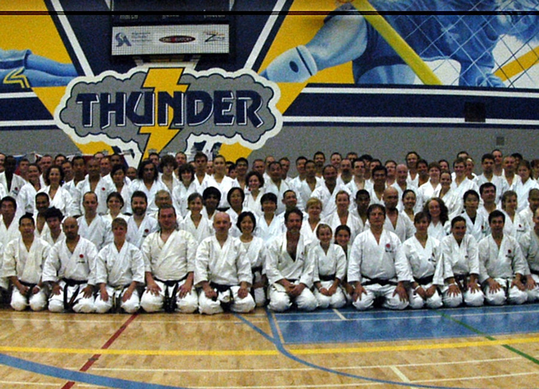
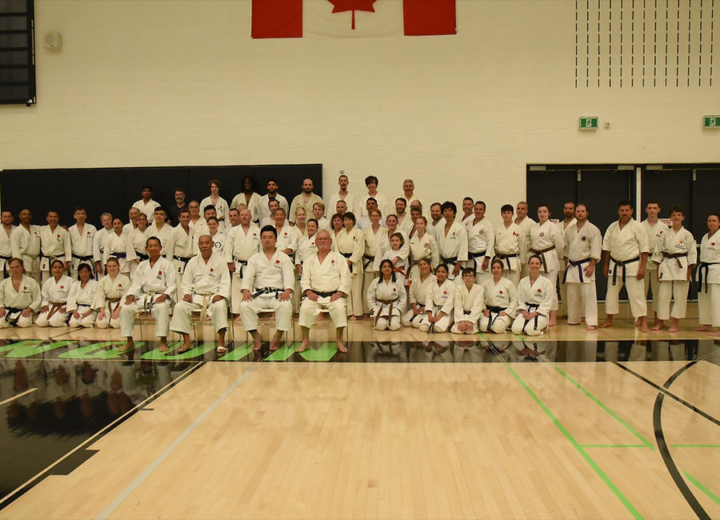

Home/Events
Camps, gradings
and championships.
Twice a year the dojo empties into a gymnasium and fills it with people who train the same way we do. These are the dates worth booking off.
Upcoming
On the calendar.

Event 01 · 紅葉
2026 OJKA Canada
Koyo Camp.
26 – 29 November 2026 · Ottawa
Four days of intensive training with a visiting instructor from the Japan Karate Association in Japan. Koyo — autumn leaves — is the camp Masahiko Tanaka Sensei built into a fixture of the North American calendar, and it remains the hardest and best weekend of our year.
Open to members and to karateka from affiliated dojos. Expect long sessions, detailed correction, and a grading opportunity at the close.
Event 02 · 全国
2027 JKA Nationals
— Ottawa.
23 May 2027 · Ottawa
The national championships come to our city, hosted on home ground. Kata and kumite divisions across every age group and grade, from first-time youth competitors to senior black belts.
Spectators are welcome and free. If you have ever wondered what fifty years of this looks like from the outside, this is the day to come and watch.

Every year
The rhythm
of our calendar.
CJKF Summer Camp
The camp Saeki Sensei started in the 1970s, grown into one of the largest karate events in North America. Days on the floor, evenings outdoors.
Koyo Camp
Our own four-day intensive with an instructor flown in from JKA Headquarters. The centrepiece of the dojo year.
Gradings & Dojo Cup
Official JKA gradings through the year, plus our in-house Dojo Cup — the friendliest competition you will ever be nervous about.
Gallery
Fifty years,
in pictures.
Click any image to open it.
Be there
Train with
the whole dojo.
Members get first notice of camp registration, grading dates and travel arrangements.